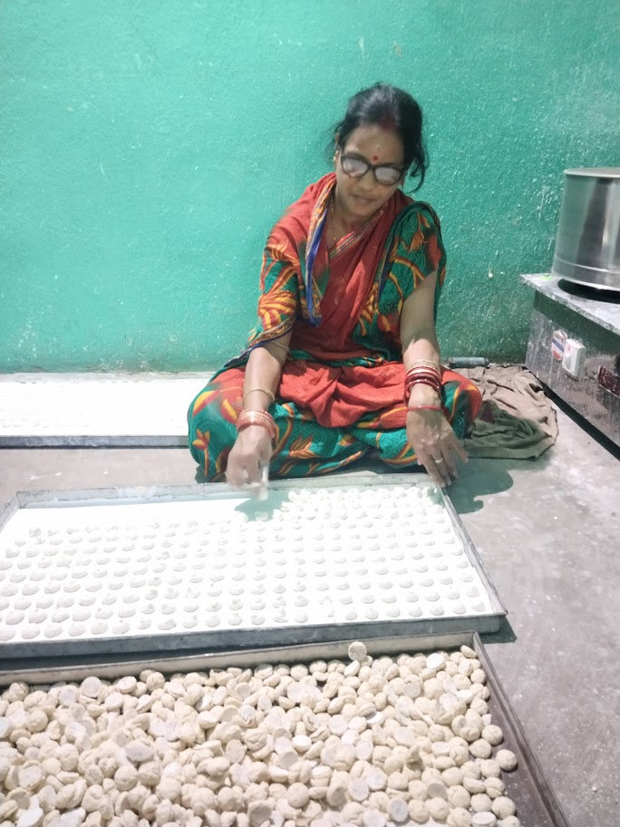
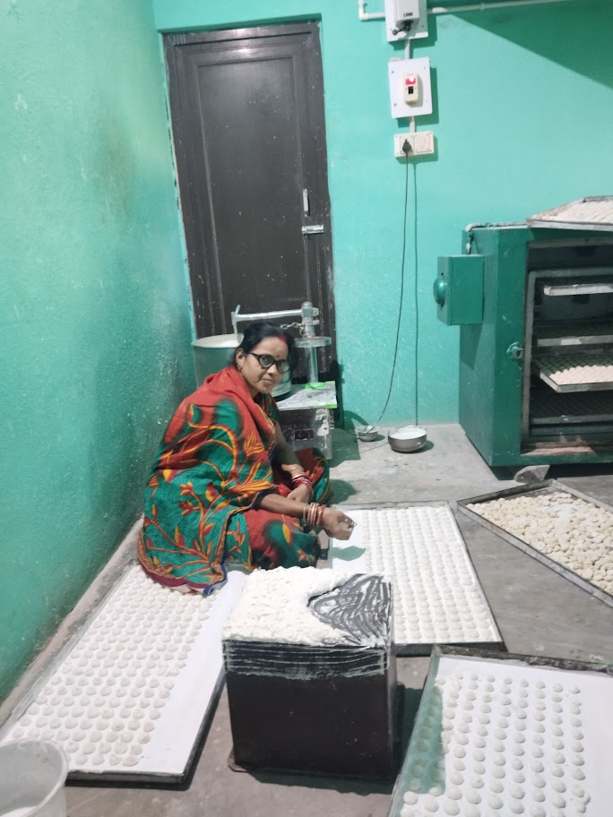
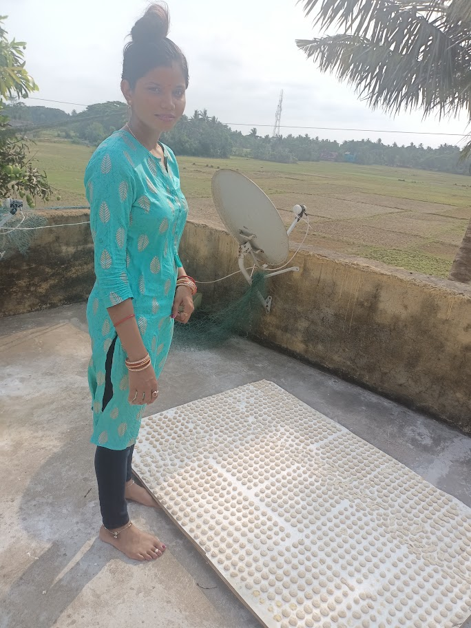

GST IN :21ERTPR5888H1ZW



Welcome to Shree Enterprises, where quality, freshness, and trust come together. We are a dedicated food manufacturing company committed to producing high-quality food products that meet the highest standards of safety, nutrition, and taste. With modern manufacturing facilities and strict quality control processes, we ensure that every product is prepared using carefully selected ingredients and advanced production techniques. Our experienced team works tirelessly to deliver fresh, hygienic, and delicious food products to homes, retailers, restaurants, and businesses. Our mission is to provide healthy and affordable food while maintaining excellence in quality and customer satisfaction. We believe that great food starts with the finest ingredients and a commitment to innovation, sustainability, and continuous improvement. At FreshHarvest Foods, we value integrity, food safety, environmental responsibility, and long-term relationships with our customers and partners. Every product we manufacture reflects our dedication to quality, reliability, and excellence. Whether serving local communities or expanding into global markets, we strive to be a trusted name in the food manufacturing industry by delivering products that people can enjoy with confidence.
To become a leading food manufacturing company recognized for producing safe, nutritious, and high-quality food products that enrich lives around the world.
To manufacture delicious and reliable food products using advanced technology, skilled professionals, and sustainable practices while exceeding customer expectations every day.